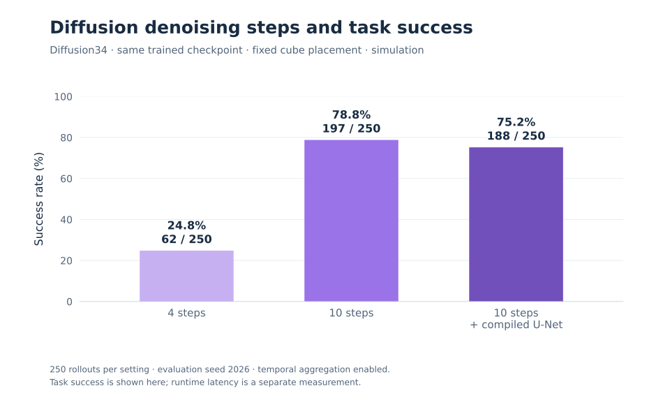
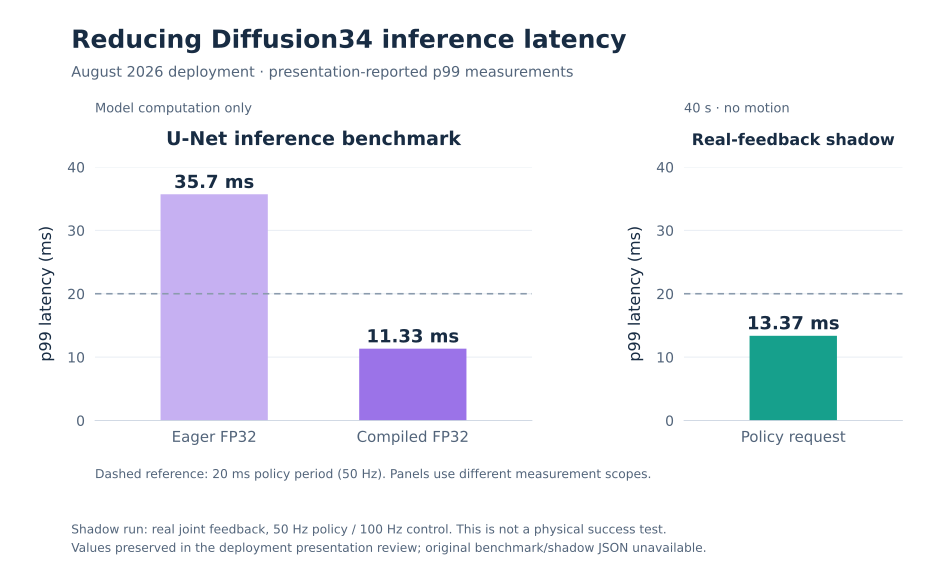
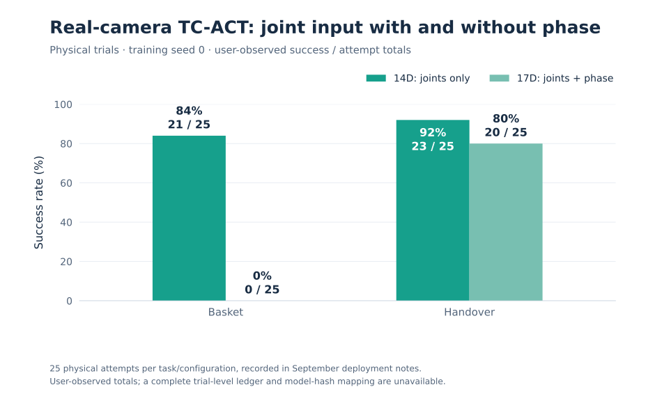
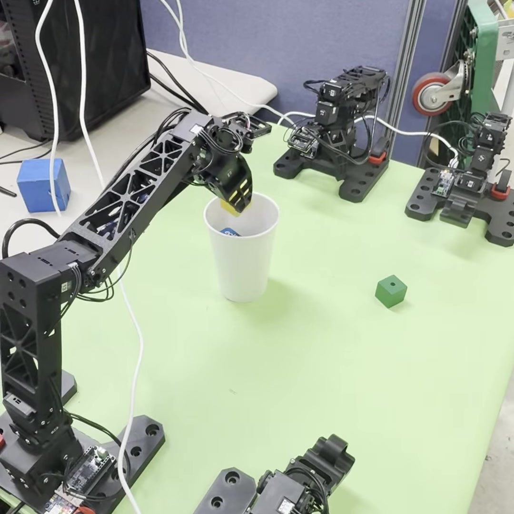

Predict an action chunk.
Transformer-based behavior cloning, a CVAE training path, and temporal aggregation of overlapping predictions.
Action chunkingCVAETemporal aggregation
Robotics · Imitation learning · Real systems
I build dual-arm learning systems that connect digital twins, demonstration data, and physical robots. My work spans ACT, Diffusion Policy, and a temporal-context extension of ACT.
The research, connected
Building the platform made it possible to study the data, change the policies, and take the resulting behavior back to the robot.
01 / Systems foundation
I connected the OMX robot assets and manipulation tasks to ROS 2 teleoperation, episode recording, policy training, and rollout evaluation.

What I built
Robot and task integration. Dual-arm assets, grippers, contacts, resets, and success conditions for manipulation tasks.
A consistent data interface. Joint order, action scaling, normalization, timestamps, and HDF5 episode formats.
Simulation-to-hardware interfaces. Pair mapping, physical gripper conversion, policy servers, and ROS 2 execution.
02 / Policy learning
I adapted both policy families to bimanual demonstrations, managed their observation and action interfaces, and examined success alongside inference cost.
Transformer-based behavior cloning, a CVAE training path, and temporal aggregation of overlapping predictions.
A conditional U-Net and DDIM inference, with a measurable trade-off between denoising budget, latency, and task success.
A measured inference trade-off

Teleop30, train27 / validation3; 34D observations, 14D actions, chunk50; 60,000 training updates. These are the earlier Diffusion34 experiments. Other deployed checkpoints use separate observation, normalization, and timing contracts.
| Inference | Success | Rollouts |
|---|---|---|
| 4 steps | 24.8% | 250 |
| 10 steps | 78.8% | 250 |
| 10 steps + compile | 75.2% | 250 |
03 / My ACT extension
TC-ACT summarizes causal joint and image history into a context token. I studied where that history helps, how the modalities interact, and how performance changes beyond the training reset range.
Experiments include state-only, image-only, and combined history; CVAE and phase ablations; and auxiliary future-state prediction in selected versions. Future values are training targets only.
Model generations use different history encodings and auxiliary objectives. The E6000 comparison reports complete ACT/TC-ACT configurations under shared core settings. Model-version context (EN / KO) ↗
Visual policies · E6000

Shared core settings: Teleop30 + Mimic300, training seed0, 14D joints + RGB, frozen ResNet18 features, chunk50, E6000 final checkpoints and temporal aggregation. Evaluation seeds are 2026–2030, with matched initial positions within each ACT/TC-ACT pair. TC-ACT also uses sampled history and auxiliary future-state supervision.
Task-specific evaluation horizons are Pick&Place 708 and Handover500. Pick&Place uses convex-decomposition finger colliders; the current Handover task also selects decomposition colliders, while its full historical physics snapshot was not retained.
| Task | ACT | TC-ACT | TC − ACT |
|---|---|---|---|
| Pick&Place | 93.44% (1168/1250) | 93.12% (1164/1250) | −0.32 pp |
| Handover | 74.32% (929/1250) | 82.72% (1034/1250) | +8.40 pp |
Spatial robustness · E6000

ACT and TC-ACT share initial placements within each pair. Both use training seed0. This reset-range study uses task-specific settings and is separate from the shared-core E6000 comparison above. Its Pick&Place points use AMP off and exclude the decomposition / AMP-on Pick&Place series.
Download the plotted valuesLook at a failure, too
04 / Demonstration research
I studied how demonstrations are generated, aligned, selected, and mixed—and how those choices affect a learned manipulation policy.
Human demonstrations
Record operator strategies and real joint trajectories. Establish a task-specific learning baseline.
Retargeted trajectories
Segment subtasks, retarget around objects, and broaden placement coverage while tracking source lineage.
Programmatic collection
Generate contact-rich simulation demonstrations with IK, grasp phases, clearances, and smooth returns.
Policy-generated data
Filter successful executions and retrain. Test how additional teacher-generated data changes performance.
Data quality is part of the experiment.
RGB/state/action alignment, stable endings, source IDs, and train/validation splits are recorded alongside the learning results.
A collection-to-learning example
100 exported from 135 attempts. All 100 selected episodes reached final success in RGB replay. A subsequent ACT CVAE experiment recorded 221/250 = 88.4%.
Collection attempt rate, selected-demo replay, and learned-policy success are three separate measurements.
Mixing human and generated data
Low-dimensional ACT Teleop-only at 60k updates averaged 92.8% over three training seeds. The C5 mixed condition at 200k averaged 98.53%.
Different update budgets: these numbers describe separate conditions, rather than isolating the effect of augmentation.
A useful negative result

The six-control study uses approximately 14,000 optimizer updates per condition, a fixed evaluation seed2026, and a final checkpoint. Normalization was fitted on the original Mimic50 and held fixed across conditions; student policies were trained from scratch. Successful rollouts come from a policy trained on related expert data. The full four-source × two-policy experiment matrix is not complete.
05 / Real-time systems
I profiled inference and communication, optimized the Diffusion denoiser, and separated ACT policy queries from hardware command timing.
Compile the FP32 U-Net with reduce-overhead, retain the 10-step denoising budget, and warm up the runtime before execution.
Independent ACT policy and command loops, TCP interfaces, explicit normalization, and consistent arm/gripper mapping.
Minimal PyTorch ACT/Diffusion inference packages, reference-output comparisons, reset semantics, and a separate ROS 2 bridge.
Earlier Diffusion34 deployment

Values are preserved in the August experiment presentation. The model is the earlier 34D Diffusion policy; later Task2 checkpoints and RTX3070 timing experiments have separate contracts and results. Their measurements are not pooled here.
October / Task2 ACT on hardware
Operator-observed, fixed-layout handover trials. A detailed timing log is retained for the final 796-step run.
This Task2 ACT policy uses joint and fixed-environment observations. Its hardware result is a separate experiment from the real-camera Visual TC-ACT study below.
06 / Visual policies on hardware
I collected real-camera demonstrations and deployed Visual TC-ACT using live RGB and joint observations. The study compares joint-only 14D inputs with 17D inputs that add phase features.
Reduce waiting. Separate camera acquisition, keep the latest frame, and warm up GPU inference.
Match learning and execution. Reuse image preprocessing, history features, joint conventions, and episode reset behavior.
Physical experiments · training seed0

Real-camera clean30 datasets; 24 training / 6 validation demonstrations per task. 14D uses joint observations; 17D adds three phase features. Historical image and joint information is maintained by the Visual TC-ACT policy.
| Task | 14D joints | 17D joints + phase |
|---|---|---|
| Pick&Place | 21/25 · 84% | 0/25 · 0% |
| Handover | 23/25 · 92% | 20/25 · 80% |

How the work is evaluated
Success rates, timing measurements, and demonstration counts have different meanings. Each figure carries its task, model version, sampling conditions, and evidence scope.
Same initial placements within policy pairs. Training seeds and evaluation seeds are reported separately.
Source episode IDs, aligned RGB/state/action fields, splits, quality filtering, and normalization conventions.
Wider reset ranges, failed rollouts, unsuccessful retraining conditions, and task-dependent temporal effects.
About / Additional work
I am an undergraduate student at Kyung Hee University, working across Biomedical Engineering and Electronic Engineering. My interests include visual manipulation, imitation learning, reinforcement learning, and embodied intelligence.
Further experiments include Mamba-2 temporal encoders and MAT/PPO action-chunk learning. My earlier work also spans embedded control, biomedical instrumentation, and data analysis.
Download CVUART, I2C, ADC, PWM, timer input capture, CLCD output, joystick input, and sensor interfaces.
Signal acquisition, analog circuits, force measurement, soldering, and GUI-based signal visualization.
Data processing, statistical analysis, and publication-oriented figure preparation.